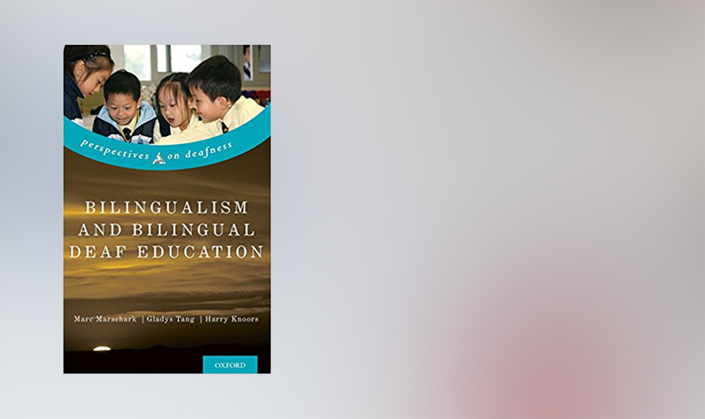

聽損孩子的成長之路（四）如何改變現況？
簡單地歸結〈聽障孩子的學語之路（三）爭議與限制〉一文，目前的困境包含：
（一）台灣早期療育沒有手語教學
（二）早期療育排除了相當數量的家庭。舉凡經濟弱勢、教育水準較低、遠離城市、雙薪忙碌、隔代教養、資訊落差、價值觀……等，都會成為家庭接受服務的障礙，使孩子無法就學。
一、婦聯與雅文的嘗試
目前婦聯和雅文只有在臺北、桃園、宜蘭、台中、高雄等城市設有教學中心。針對地處偏遠而難以前來上課的家庭，它們有明確的問題意識，嘗試推動遠距教學和到宅服務。
雅文基金會從約十年前就開始進行遠距教學的實驗。聽能管理部主任馬英娟告訴我們，針對台灣各地的偏遠個案，在開案半年之後，如果孩子學習狀況夠好，能夠專注，家裡也有相關視訊設備，雅文會視情形使用視訊遠距教學。
婦聯聽障文教基金會的受訪人也說，從去年（2016）起，婦聯的遠距教學正式上路。有了遠距教學的協助，他們有位在花蓮的個案，一個月就只需要來台北上課一次。
視訊教學的優點在於能減少家庭奔波往返的負擔，然而，它仍然無法完全取代實體教學，家庭仍須定期回基金會現場上課，以利教學的調整與進度評估。同時，視訊教學也有可能因為小孩無法乖乖在電腦前上課，不受控制，或因為戴上助聽器仍聽不清楚喇叭的聲音而失敗。
除此之外，兩個基金會都曾嘗試過到宅服務，其中雅文有提供花東地區的服務，老師必須帶著各種教學用的道具和玩具，搭火車到東部，來到孩子的家，一教一趟就去掉一天。因為耗費成本高昂，因此能夠推行的規模有限。婦聯也曾嘗試過到宅服務，不過也因爲負擔過大，並沒有穩定的推行。
有關其他可能的改變嘗試，歸結前幾篇文章的討論，我想在此粗淺地提出四個方向。
二、我所見的改變可能
第一個方向是，建立早療資源轉銜服務；第二，嘗試拓展雙語教學；第三、修正特教法；第四、應用虛擬實境技術的教學輔具設計。
一、建立學前聽損教育轉銜服務
我曾經在婦聯會分享我的成長歷程，希望讓家長們知道，他們的孩子未來可能會是怎麼樣子，或許會比較安心。我覺得我從小到大求學過程都還蠻順遂，社團愛情課業各種學分都點好點滿，但我分享的當下，下面幾個家長一邊聽著一邊擦眼淚，這個經驗讓我印象非常深刻。
在我們的訪談與文獻回顧過程中，發現對前途的茫然、求助的孤獨感與跌跌撞撞，幾乎是所有聽損孩子家長不斷提及的痛。
為什麼會有這樣茫然的感覺？要讓這群習語前失聰的孩子，學好語言，是跟時間的一場殘酷賽跑。語言學習黃金期很短，在這麼短的時間內，要找到資源、做好檢測、佩戴輔具、將家庭照顧者的狀態調整好、還要找到合適的學習方式，是不容易的事。如果錯過些什麼，帶來的影響往往難以逆轉。
雖然醫院在確診之後，會提供家庭相關協助資源的轉介，但一般也就僅止於告訴家長有哪些資源可以接觸。這樣的轉介是機構之間各自為政的，也深受忙碌、高壓的醫療現場影響而無法維持品質。
不同的組織，有各自運作的目標與邏輯，因此，提供的各種服務之間，難免青黃不接。
需要有服務陪伴家庭尋找適合的早期教育服務與技術支持，提供所需的心理輔導與社福資源，來填補這樣青黃不接的空隙。特別是藉此減輕社經弱勢家庭在此過程的負擔。
確診聽力損失必須在醫院完成，或許可以從醫院的社工室下手，作為終結後續迷航的服務起點。
這樣的服務要能藉此有規模地追蹤、統計國內聽障／聾孩子的教育現況，釐清進一步的問題意識。
我們訪問不同早療組織的工作者，發現沒有組織能掌握國內聽損孩子成長歷程的實際圖像。到底家庭在不同組織間來去的過程間，發生什麼事？家長尋求協助的旅程反覆曲折，可能同時醫院語言治療科、雅文、婦聯、私人工作室、聲暉等求助，獲得來自不同處的學習經驗，有的獲得好成效，有的則不甚理想。
怎麼樣的家庭能夠成功教養孩子的溝通能力？又是怎麼樣的歷程？如果有些家庭被排除了，具體而言是怎麼樣的排除、怎麼樣的分佈？如果要提出改善方案，如何評估成效？
掌握孩子學習成效與相關變項的資料，對於更進一步釐清問題來說非常重要。
二、拓展雙語教學
雙語雙文化模式（Bilingual Bicultural Model）於 1980 年代發軔於瑞典，並從北歐擴散到西歐北美國家，另外亞洲如中國、香港、新加坡都有相關教學機構。而台灣目前雖然有一些學者跟教育者嘗試推動雙語的早期療育和先期研究，但仍然未有足夠資源投入以建立穩定有組織的教學（刑敏華，2004；黃玉枝，2005；金明蘭等，2015）。
當主流社會使用的語言，與社會少數族群使用的語言不同時，雙語雙文化模式強調平等尊重兩者，在主流文化與少數文化中取得平衡。對聽損孩童而言，雙語模式的教學強調以手語作為第一語言，再以手語為基礎，發展口語能力。
到底在純口語和雙語模式間，哪個比較好？學者 Marschark 、Tang 與 Knoors（2014）指出，可以從兩個不同的概念基礎來討論：一邊是語言與認知發展、學業成就等產出，這可以用實證研究來衡量；另一邊則是從文化、生活方式、語言學習作為基本人權的角度切入，此則偏向價值、倫理、道德的範疇。
首先，從語言與認知發展的角度切入。近年語言學的研究指出，使用手口雙語學習的小孩，會如同其他口語的雙語學習一樣，出現語言混搭、語言轉移的現象。手語的學習，能夠活化孩童的語言學習中樞，並且增益口語的學習。（邓慧兰等，2011；邓慧兰，2014）然而，如果考量實際的發展指標，隨人工電子耳等輔具科技的快速發展，採雙語學習的孩子，相較僅學習口語的孩子，並沒有顯著的優勢。（Marschark et al., 2014）
若從文化、生活方式、語言學習作為基本人權的角度切入，雙語學習才有較為穩固的立足點。除了雙語模式強調語言文化平等，相對政治正確外，較諸只有口語的教學，雙語模式讓孩子免於承擔太晚發展語言的風險。舉例而言，不是所有孩子的生理狀態都適合配戴輔具，而不適合的情形往往不容易及時發覺。
不過，倫理道德難以說服聽常者為多數的家長，實證的研究結果對於家長的決策，會有更大的影響力。而現今國內外學界仍無法建立雙語模式確實優於口語教學的結論。在研究實務上也有困難，一來會進入雙語教學而非口語教學的個案，許多是口語發展不佳，經過一番折騰才開始雙語學習。這樣的背景差異按理來說會有影響，很難公平比較；二來雙語模式的建立，對於師資跟教學資源有較高的要求，要建構可信有效的比較條件並不容易。
想了解雙語教學模式的話，推薦這本書：Marschark, M., Knoors, H., & Tang, G. (Eds.). (2014). Bilingualism and bilingual deaf education. Perspectives on Deafness.。內容相當清楚，三位作者分別來自美國、歐洲跟亞洲，都是知名學者，實務經驗也非常豐富。
我基本上認同雙語模式的價值。退一步來說，無論成效如何，考量仍有孩童無法以口語為第一語言，台灣仍然需要有雙語的早期療育據點，能儘早接納這群孩子。
在台灣，或許可以結合啟聰學校的既有資源，嘗試推動學前小班教學，不過，必須先對有需求的孩童數量與分佈有所掌握，這部分就必須仰賴前述解決方案一的追蹤與統計以及方案三的法令保障。而香港中文大學手語及聾人研究中心推動十年有餘的手語雙語共融教育計劃，是適合台灣的參考對象，因為教學技術與實務與語言社會文化互相交織，而它是華文世界鑽研最深者。
三、修改特殊教育法
我認為可以在前述學習服務系統完善的前提下，修改《特殊教育法》與相關施行細則，規定凡新生兒聽力篩檢出聽力損失，比照義務教育，一定要接受手語、口語或雙語模式的早期教學。另外，《特殊教育法》第二十三條規定，「特殊教育之實施，應自二歲開始。」，此條文對於聽損早療而言，實屬太晚。
畢竟，語言習得無疑屬於最基本的人權內涵，應該獲得保障。坐視語言能力的受限，就是剝奪孩子終生內在思考與社交活動的豐富可能。
四、虛擬實境應用於遠距教學
虛擬實境的相關應用，也很令人期待。過往虛擬實境設備因為價格昂貴，高不可攀，如今已經成為消費性電子與內容產業的一個成長新亮點，因此，更有機會為一般家庭、以及聽損教學機構所負擔。
近年企業對 VR 硬體與內容的投資已經達到數十億美元的規模（Bailey& Bailenson, 2017），虛擬實境在教育上的應用，也是快速成長中的研究次領域。
按 Dalgarno 和 Lee (2010) 的研究指出，三維的虛擬教育環境（3-D VLEs）具有以下幾個應用於教學的潛力：（一）發展空間知識的應用、（二）使真實世界不實際或難以實現的學習任務變得容易、（三）提升學習者的動機與投入、（四）利用虛擬實境，讓學習更貼近真實世界，使學用落差縮小、（五）帶來比二維平面上更有效與豐富的協力學習（Collaborative Learning）。
和前述聽損孩童的早期教育困境相互對照，我認為其中二到五的潛力，可以做這樣的深入敘述：
1. 使真實世界不實際或難以實現的學習任務變得容易
- 因為有些家庭難以配合現行的教學模式，或是居住在偏遠地區，因此很難在真實世界很普及地執行早期聽語教育的學習任務。
- 虛擬實境的教學，有機會突破空間距離的限制。實際仰賴的是沈浸式的體驗，讓在虛擬實境中的使用者可以體驗到 Response-as-if-real (RAIR) 的感受。 (Slater, M., 2009; Peña et al., 2010)
2. 提升學習者的動機與投入
- 現行早期療育實際的教學方式是透過遊戲與活潑的互動來學習，因此傳統的遠距教學方式例如 Skype 受限於螢幕介面，無法滿足和六歲不到的小孩子互動的需求。VR相關應用或許可以透過提供孩子沈浸式的遊戲體驗，讓孩子順利在遊戲中獲得學習的動機與投入。
- 目前已經有一些相關嘗試。舉例來說，Parsons與 Mitchell（2002）以及 Bellani等（2011）針對自閉症孩子使用虛擬實境來學習與外界互動的研究即指出，面臨傳統指導式教學成效不彰的情境時，虛擬實境提供讓孩子自由探索、練習社交技巧的機會，反倒可能特別有效。Rosa等人（2016）的研究，則藉由虛擬的騎單車情境，讓孩子更有意願利用健身單車機減肥。
- 更早的相關發現是 Schwienhorst 2002 年針對電腦輔助語言學習（computer-assisted language learning, CALL）的研究。她指出，學習者的自主性與虛擬實境是完美的結合，因為以下三個原因：（一）提升對語言的注意、（二）支持學習者與學習同儕間、母語教學者間的協作與互動、（三）提供實驗性的，讓學習者自己嘗試的虛擬空間。
3. 利用虛擬實境，讓學習更貼近真實世界，使學用落差縮小
- 利用 VR ，遊戲設計者可以透過故事或互動情境的設計，創造語言發生的脈絡，讓孩子不自覺地多聽多說，並且透過將 VR 的情境類比到真實世界，來獲得真實世界中溝通能力的成長。
- 早期即有研究藉由虛擬實境創造有車流的街道，藉由簡單化外界的刺激，幫助自閉症孩子從容易的地方開始，學習注意外界的變化以及與之互動。（Strickland、Marcus、Mesibov、Hogan，1996）。
- 除了早已在飛航、國防產業發展成熟的虛擬駕駛/操作技術，近來在醫療教育上，外科手術應用虛擬實境進行教學有相當大量的研究。
4. 帶來比二維平面上更有效與豐富的協力學習
- 我認為利用 VR 的遠距離教學，實際上有潛力允許孩子、教師一同在一個虛擬空間中玩遊戲、學習利用輔具察覺、辨認、理解、開口說話，或是學習手語。
- Campbell（2016）等人的研究則討論多使用者虛擬學習環境（Multi- User Virtual Learning Environments, MUVLE）的可能性。他們利用HTC VIVE、Webcams、360度環場影像 and 2D 全息影像創造出一個可以讓許多使用者共享的虛擬空間。他們創造出的這個空間，允許 2D 的全息老師影像成為一個虛擬的實體來上課。使用者甚至可以隨自己家中的設備不同（從桌上型主機乃至於全沈浸式的設備），使用不同的介面來參與這個空間的活動。
有關 VR 應用的歸結
儘管有上述潛力，VR 相關技術也仍還有許多困難需要克服，包括：實體介面對孩子仍不親和、成本可能仍然過於高昂、虛擬實境對於幼兒視力以及認知發展的評估仍有待研究（Davis, 2016; Loveridge, 2017）、可玩性與學習內容難以兼顧（Virvou & Katsionis, 2008）、觸及教育理論的研究仍十分稀少等。限於篇幅，在此不詳述。
另一方面，真正進入特殊教育現場的研究還是相對很少，而實驗室的研究總忽略實際教學現場的複雜性（Cuendet et al., 2013; Gutiérrez et al., 2017）。就我做相關文獻回顧的心得，也發現許多相關研究主要是針對 VR 設備是否能提升某項教學效果，選定幾個可操作化的實證指標，建立實驗組與對照組，就把研究方法跟實驗結果寫成一篇論文。在脫離教育現場的狀況下，對現況幫助有限。
虛擬實境以及擴增實境的發展，或許能夠為現行教學帶來更好成效，並且彌縫因為社會資源分配不均、城鄉距離等產生的教學死角。在教學第一線的機構，很需要這方面的創新。
我們或許可以期待在未來，世界上的聽損孩童，都能有機會藉由新的適當科技，獲取他們所需的語言能力。
三、結語
「聽損孩子的成長之路」專題寫到這邊，是告一段落了，終於了卻一樁心事。
在最後想藉由說明四篇文章的結構設定，做簡單的回顧。
四篇文章都力求行文淺白，並且希望有清晰的起承轉合。第一篇以我自己的成長故事入門，希望藉有血肉的經歷描繪，讓讀者可以稍稍體會照顧者的艱難與所需的機緣；第二篇是台灣的聽損學前早期療育簡史。承續第一篇的成長歷程，予以後設地拓展，在我有限的知識下，粗淺地介紹1990年代到現在，台灣的聽損學前早療環境，到底是在怎麼樣的前提下建立，經歷在地化，不同的機構有哪些差別、怎麼教、達成了怎麼樣的效果；第三篇是反面討論，著重在前述發展脈絡下，聽損學前教育領域所遭遇的限制和爭議；第四篇則針對前述的限制與爭議，指出現今兩個機構做了哪些改變的努力，以及個人認為有哪些改變的可能或許可以嘗試。
如同上述，在最後一篇文章淺介目前我所知的幾個改善方向。我知道任何一個都不容易，可惜現下有限的知識無法容許我再想、再寫得更深刻，如果多年之後回顧這幾篇文章，能讓我既駭且笑，那或許是我有所成長。
最後，在搜集資料的數年間受到太多人的幫助，也讓糊裡糊塗長大的我在回顧過往的歷程，深知自己何其幸運、所受協助是何其多。而同時更多地瞭解一些語言學與聽語認知發展的背景知識，對自己所受到的限制更加了解，不免覺得頗為悲哀，坦白說，這對心理是相當的磨耗。
是以不斷地回顧寫到這邊，也到了休息的時候。在芬蘭求學期間，能做的是了解北歐國家雙語教育的現況，以及就課程之便，學習上述方向相關的參與式設計規劃、介面與遊戲設計。對我來說，不斷回顧過往，而不看看前方，是看不到希望的，所以我現在要轉身啦！881
相關連結：
參考資料
- 邢敏華（2004），〈聽障教育的雙語教學：理論與實務初探〉。 《2004 年手語暨溝通障礙教育學術研討會論文集》 。國立台灣師範大學。
- 黃玉枝（2005），〈學前聽障兒童雙語教育實施成效之研究(I) 研究成果報告(精簡版)〉。台灣：行政院國家科學委員會。
- 邓慧兰（2014），〈聋童语言获得与手语双语共融教育: 语言科学研究之知识转移〉。语言科学，第13卷第1期，24-33。
- 邓慧兰、姚勤敏、林慧思、冯晓雯、施婉萍（2011），〈手语双语研究对聋人教育的启示〉。当代语言学，2011年第2期，175-187。
- 林桂如等（2014），《以家庭為中心的聽覺障礙早期療育》。台北：心理。
- 金明蘭、林宮如、陳志榮 （2015），〈手語教學對聽障嬰幼童的語言認知與親子溝通關係之成效研究〉。中華溝通障礙教育學會。
- Bailey, J. O., & Bailenson, J. N. (2017). Considering virtual reality in children’s lives. Journal of Children and Media, 1-7.
- Baños Rosa M., Escobar Patricia, Cebolla Ausias, Guixeres Jaime, Alvarez Pitti Julio, Lisón Juan Francisco, and Botella Cristina (2016) . Using Virtual Reality to Distract Overweight Children from Bodily Sensations During Exercise. Cyberpsychology, Behavior, and Social Networking, 19(2): 115-119.
- Bellani, M., Fornasari, L., Chittaro, L., & Brambilla, P. (2011). Virtual reality in autism: State of the art. Epidemiology and Psychiatric Sciences, 20, 235–238. doi:10.1017/S2045796011000448
- Campbell, A. G., Santiago, K., Hoo, D., & Mangina, E. (2016). Future mixed reality educational spaces. In Future Technologies Conference (FTC) (pp. 1088-1093). IEEE.
- Cuendet, S., Bonnard, Q., Do-Lenh, S., & Dillenbourg, P. (2013). Designing augmented reality for the classroom. Computers & Education, 68, 557-569.
- Dalgarno, B., & Lee, M. J. (2010). What are the learning affordances of 3‐D virtual environments?. British Journal of Educational Technology, 41(1), 10-32.
- Davis, N. (2016, March 19). Long-term effects of virtual reality use need more research, say scientists. Retrieved from the guardian
- De la Peña, N., Weil, P., Llobera, J., Giannopoulos, E., Pomés, A., Spanlang, B., … & Slater, M. (2010). Immersive journalism: immersive virtual reality for the first-person experience of news. Presence: Teleoperators and Virtual Environments, 19(4), 291-301.
- Loveridge, S. (2017, January 9). Are VR headsets safe for kids? We read the studies & guidelines so you don’t have to. Retrieved from Wareable
- Marschark, M., Knoors, H., & Tang, G. (Eds.). (2014). Bilingualism and bilingual deaf education. Perspectives on Deafness.
- Martín-Gutiérrez, J., Mora, C. E., Añorbe-Díaz, B., & González-Marrero, A. (2016). Virtual Technologies Trends in Education.
- Parsons, S. and Mitchell, P. (2002), The potential of virtual reality in social skills training for people with autistic spectrum disorders. Journal of Intellectual Disability Research, 46: 430–443. doi:10.1046/j.1365-2788.2002.00425.
- Schwienhorst, K. (2002). Why virtual, why environments? Implementing virtual reality concepts in computer-assisted language learning. Simulation & gaming, 33(2), 196-209.
- Slater, M. (2009). Place illusion and plausibility can lead to realistic behaviour in immersive virtual environments. Philosophical Transactions of the Royal Society B: Biological Sciences, 364(1535), 3549-3557.
- Slater, M., Spanlang, B., Sanchez-Vives, M. V., & Blanke, O. (2010). First person experience of body transfer in virtual reality. PLos ONE, 5(5): e10564. doi:10.1371/journal. pone.0010564
- Strickland, D., Marcus, L., Mesibov, G., & Hogan, K. (1996). Brief report: Two case studies using virtual reality as a learning tool for autistic children. Journal of Autism and Developmental Disorders, 26(6), 651–660.
- Virvou, M., & Katsionis, G. (2008). On the usability and likeability of virtual reality games for education: The case of VR-ENGAGE. Computers & Education, 50(1), 154-178.